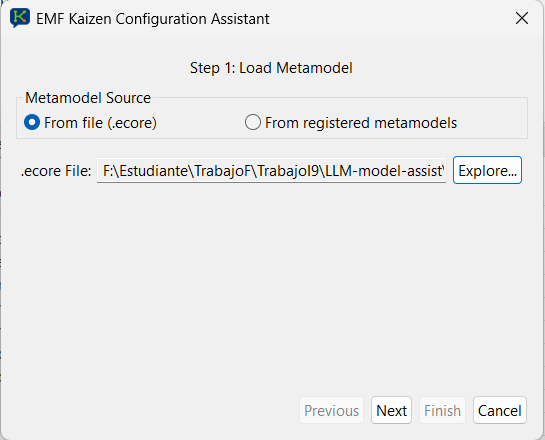
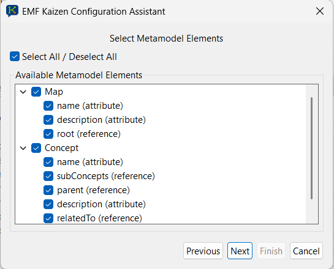
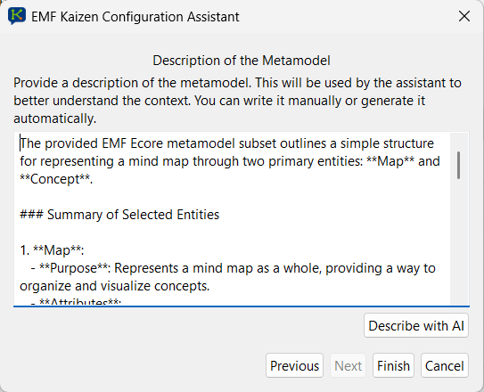
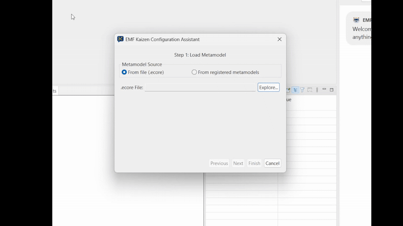
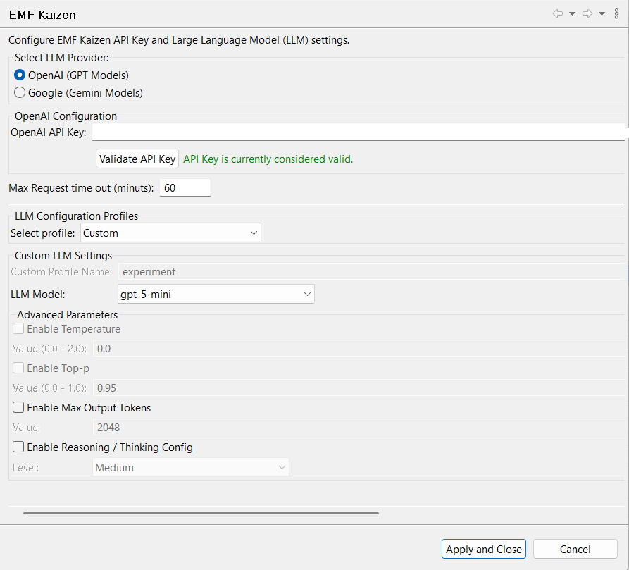
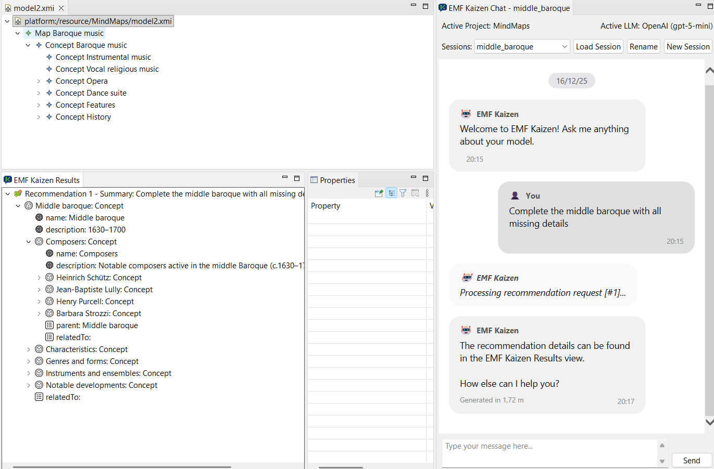
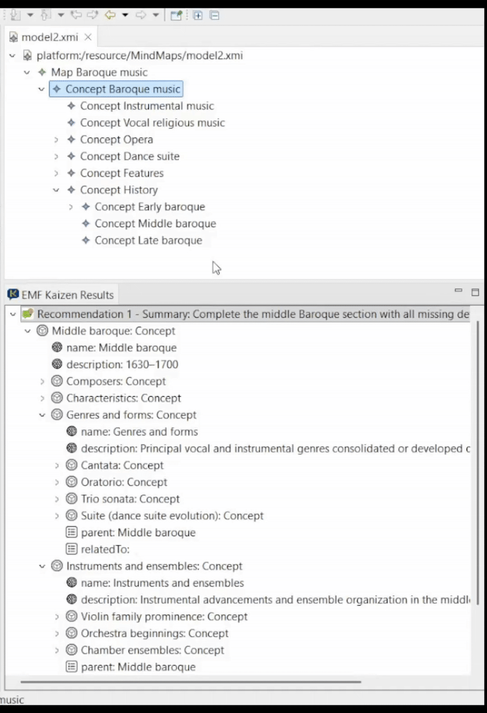
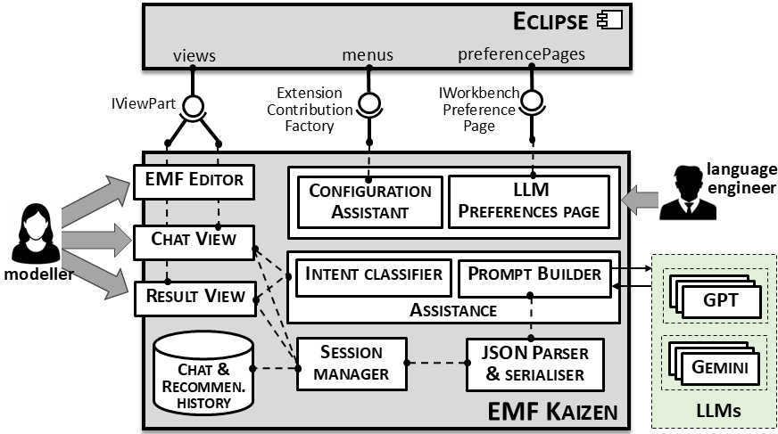

EMF Kaizen is an Eclipse-based intelligent assistant that leverages Large Language Models (LLMs) to support modelling and meta-modelling activities in arbitrary domain-specific languages. The assistant operates at the abstract syntax level and is independent of textual or graphical concrete syntaxes.
Install via Eclipse Update SiteEMF Kaizen supports an iterative modelling workflow integrated into Eclipse. The typical usage process consists of preparing the modelling context, configuring the assistant, and requesting modelling recommendations using natural language.
Users begin by opening an existing EMF model or meta-model, or by creating a new Ecore-based project within Eclipse. EMF Kaizen operates directly on the abstract syntax of the loaded model.
The Configuration Assistant allows users to load the target meta-model, select the relevant meta-model elements, and optionally provide a natural-language description of the modelling language. This configuration defines the structured context used by the assistant.

Step 1 – Loading the target meta-model from an Ecore file or from the set of registered meta-models in Eclipse.

Step 2 – Selecting the relevant meta-model elements to constrain and focus the modelling assistance.

Step 3 – Editing or automatically generating a natural-language description of the selected meta-model subset.

Configuration Assistant workflow combining meta-model loading, element selection, and contextual description generation.
EMF Kaizen provides a dedicated preferences page where users select the LLM provider and configure inference parameters such as model choice, request limits, and advanced reasoning options.

EMF Kaizen preferences page for selecting the LLM provider and configuring model-specific parameters.
Once the modelling context is prepared, users interact with EMF Kaizen through a chat-based interface. Modelling requests are expressed in natural language and can describe completion, refinement, or extension tasks.

Natural-language modelling request issued through the EMF Kaizen chat interface, triggering the generation of structured modelling recommendations.
Generated recommendations are presented in a dedicated results view. Users can inspect the proposed model fragments and explicitly integrate selected elements into the target model via drag-and-drop operations.

Inspection of generated model fragments and user-controlled integration into the target model using drag-and-drop.
EMF Kaizen is architected as a set of Eclipse-integrated components that combine conversational interaction with structured model manipulation. The architecture separates user interaction, configuration, prompt construction, and result integration concerns.

High-level architecture of EMF Kaizen, illustrating its integration with Eclipse, LLM providers, and EMF-based model editors.
EMF Kaizen is an ongoing research and development project at the Universidad Autónoma de Madrid (UAM), exploring the integration of Large Language Models with Model-Driven Engineering environments.